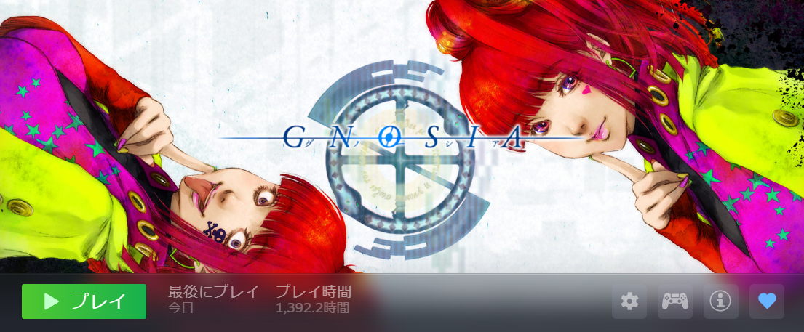

はじめに
Independent Creative Works 『Sakura ARC』。
制作者・Haru Minamoによる、インディーゲーム、小説、音楽など、ジャンルを横断して「物語」を紡ぐクリエイティブユニットです。
制作のきっかけ：推理の楽しさに目覚めて
もともとは、『かまいたちの夜』や『街』、『428』といったチュンソフトのサウンドノベルシリーズ、あるいは『逆転裁判』『大逆転裁判』『パラノマサイト』『探偵 神宮寺三郎』シリーズといった名作ミステリーをいちファンとして楽しむ側でした。
転機となったのは、人狼ゲームをベースにした『グノーシア』にハマったことです。そこで「自分の頭で推論を組み立て、正解に辿り着くこと」の純粋な楽しさに、あらためて気づかされました。
その後、『シロナガスクジラ島への帰還』や『ディスコ エリジウム』といった話題作をプレイする中で、その圧倒的な世界観に感銘を受けつつも、一人のミステリーファンとして「もっと純粋に、ロジカルな謎解きに特化した作品を作ってみたい。もっと納得感のあるミステリーを提示できるはずだ」という強い衝動に突き動かされ、本作の開発をスタートさせました。
本作が「実写ビジュアルノベル」という形式を採っているのは、それらの作品が提示した「実写だからこそ生み出せる、独特の緊張感と没入感」へのリスペクトはもちろんですが、より戦略的な理由もあります。Steamという巨大なプラットフォームに数多のインディーゲームが並んだ際、アニメ調のビジュアルが主流のミステリージャンルにおいて、実写の持つ独特の空気感は強力な「フック」になると考えたからです。
そして、かつては膨大なコストと手間がかかった実写制作が、現代のAI生成技術（ComfyUI等）を駆使することで、個人や小規模チームでも高いクオリティで実現可能になったこと。この「技術的ブレイクスルー」が、本作の制作を可能にしてくれました。
追求するのは「フェアな論理パズル」
ミステリーというジャンルに対して、特別なこだわりや大層な理念があるわけではありません。
ただ、一人のミステリーファンとして、「読み手・プレイヤーに対してフェアな論理パズルでありたい」という想いは強く持っています。
提示された情報から、論理的に正解を導き出せること。
その知的興奮を、実写という圧倒的なリアリティの中で体験してもらうこと。
Sakura ARCが目指しているのは、そんな「誠実な謎解き」です。
なぜAIを使うのか
Sakura ARCがAI（人工知能）を活用する最大の理由は、もちろん圧倒的な「効率化」です。しかし、それだけではありません。もっと個人的で、切実な理由があります。
一つは、制作者自身がいわゆる「対人折衝」や「チームマネジメント」を苦手としていること。そしてもう一つは、潤沢な予算を持たない個人（半分ニートのような生活を送る一人のクリエイター）であるという現実です。
本来、実写作品を作るには膨大なスタッフとキャスト、そしてそれらを束ねる組織力が必要ですが、AIはそれらのハードルを鮮やかに飛び越えさせてくれました。AIを「拡張」として捉えることで、組織に属さずとも、多額の資金がなくとも、たった一人で理想を形にできる。AIは、「不器用な個人」が世界と対等に戦うための唯一無二の武器なのです。
おわりに：終わりのない実験
将来の展望や、崇高な理念なんて正直ありません。
ただ、こうしてAIを相棒にして一人でゲームを作ったり、このサイト自体を構築したりする「実験」そのものを、今は純粋に楽しんでいます。
ちなみに、前半で『グノーシア』や『逆転裁判』の名前を出して語っているのは、「SEO目的で名作の名前入れとこうぜ！」とAIに書かせただけの建前だったりします。
……が、まあ、本気で狂ったように楽しんできたのは紛れもない事実です（↓証拠画像）。

ちなみに本日（2026年5月13日）、本作『神屋探偵事務所：女子高生の消えた夏』のSteamストアページの審査申請を無事に行いました。
Steamで一発当たればラッキー、くらいの気楽なスタンスで、これからもマイペースに作りたいものを形にしていこうと思います。